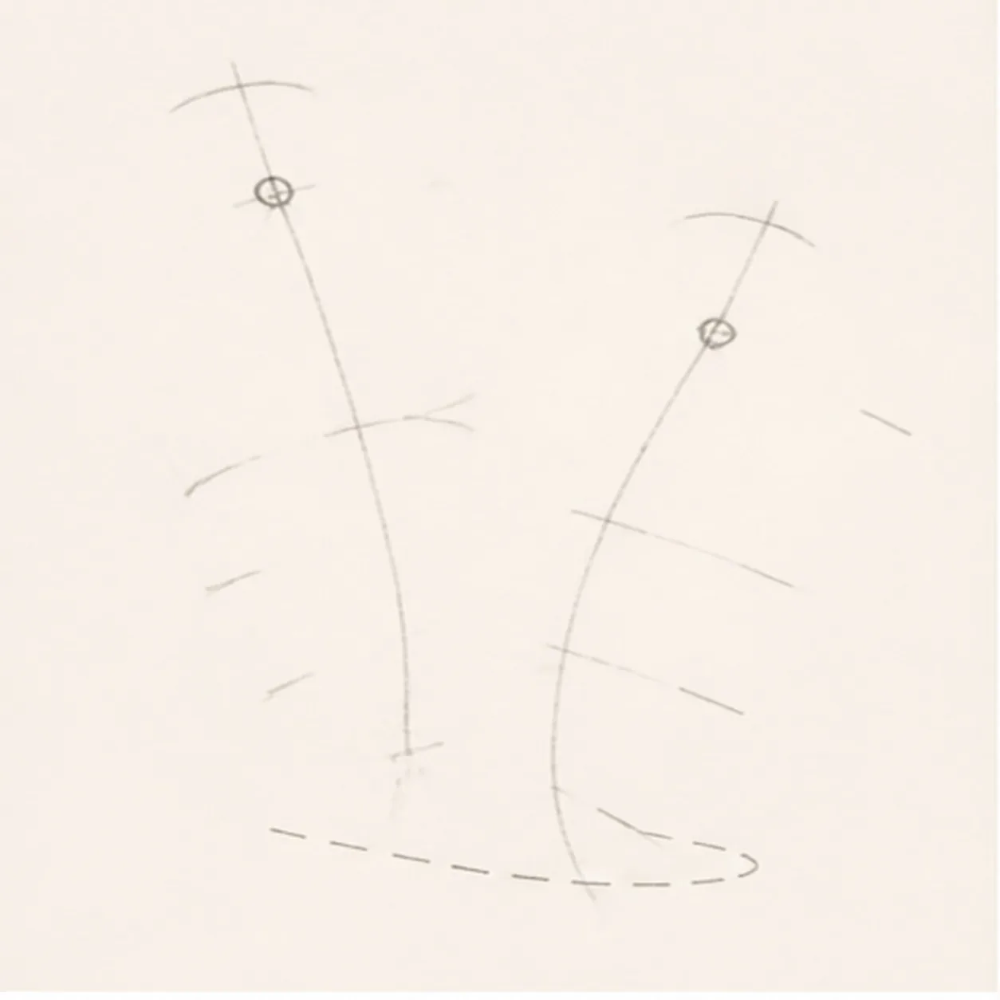
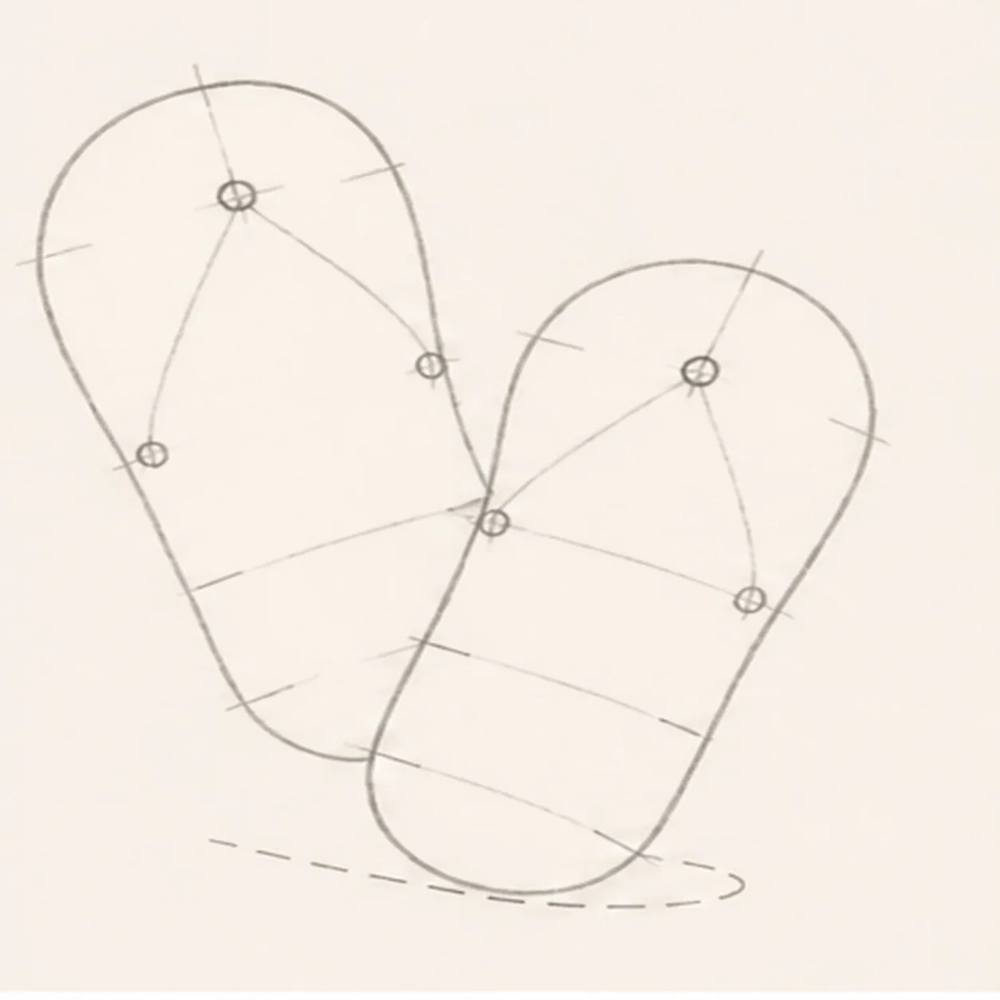
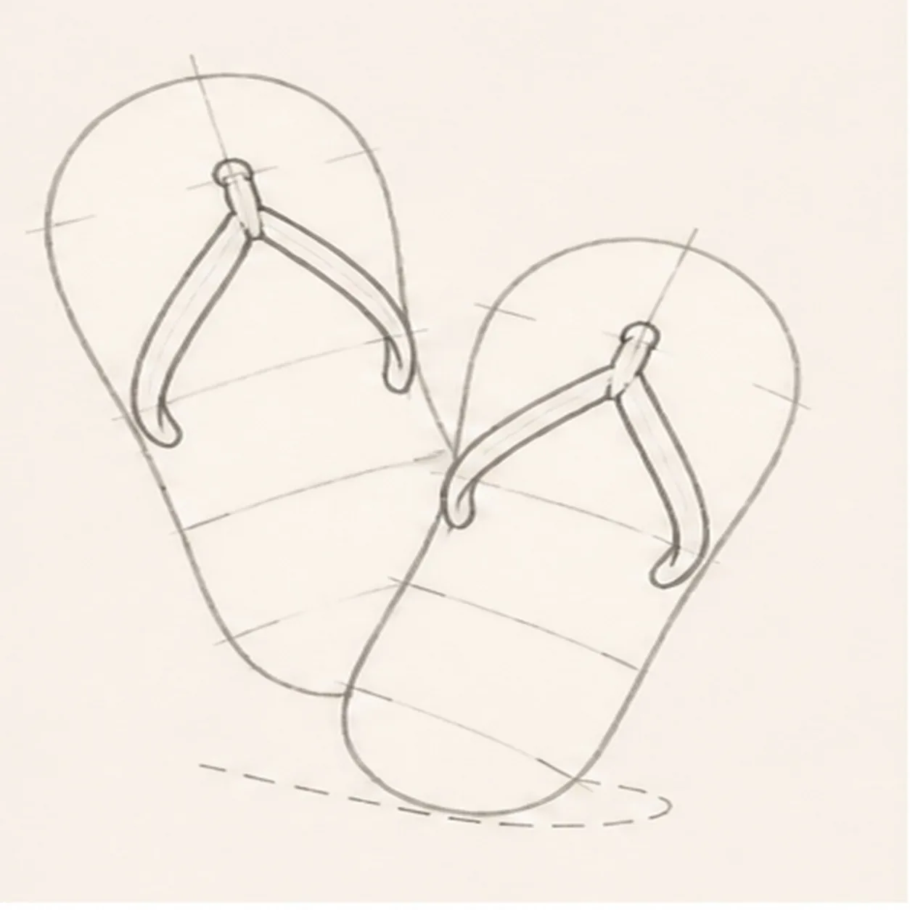
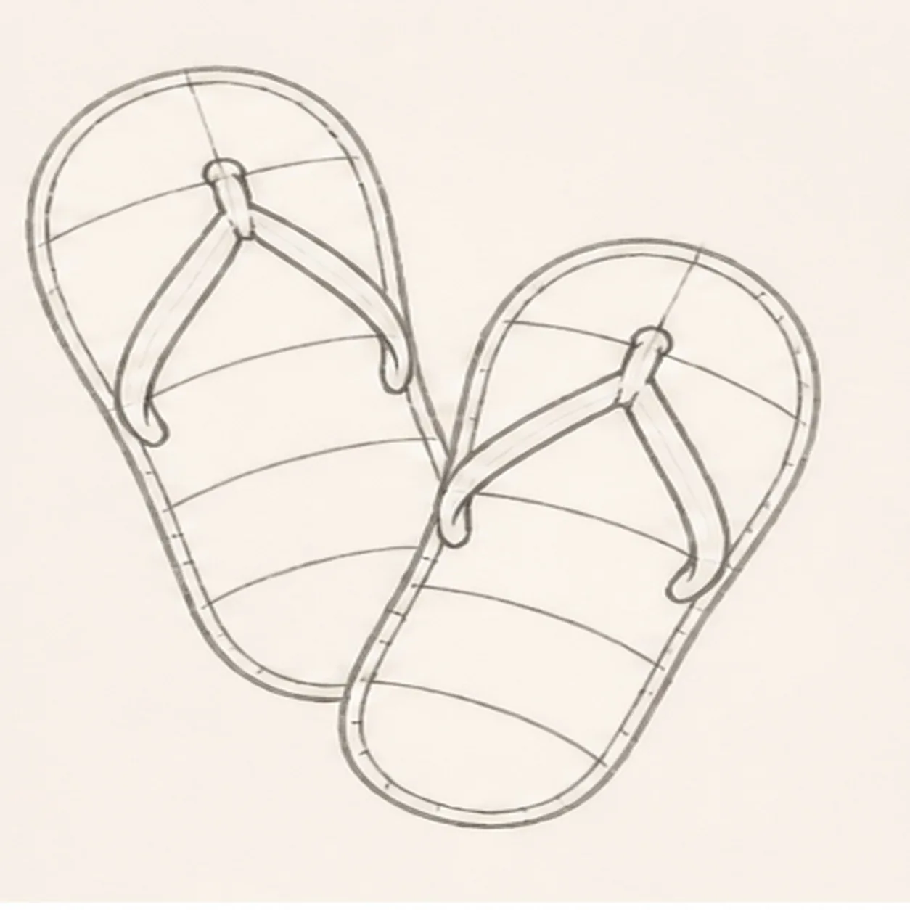
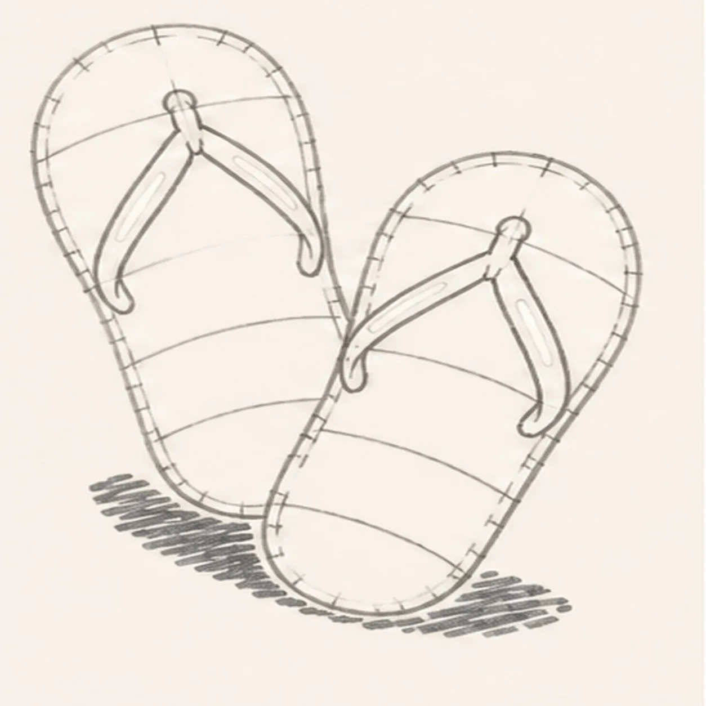
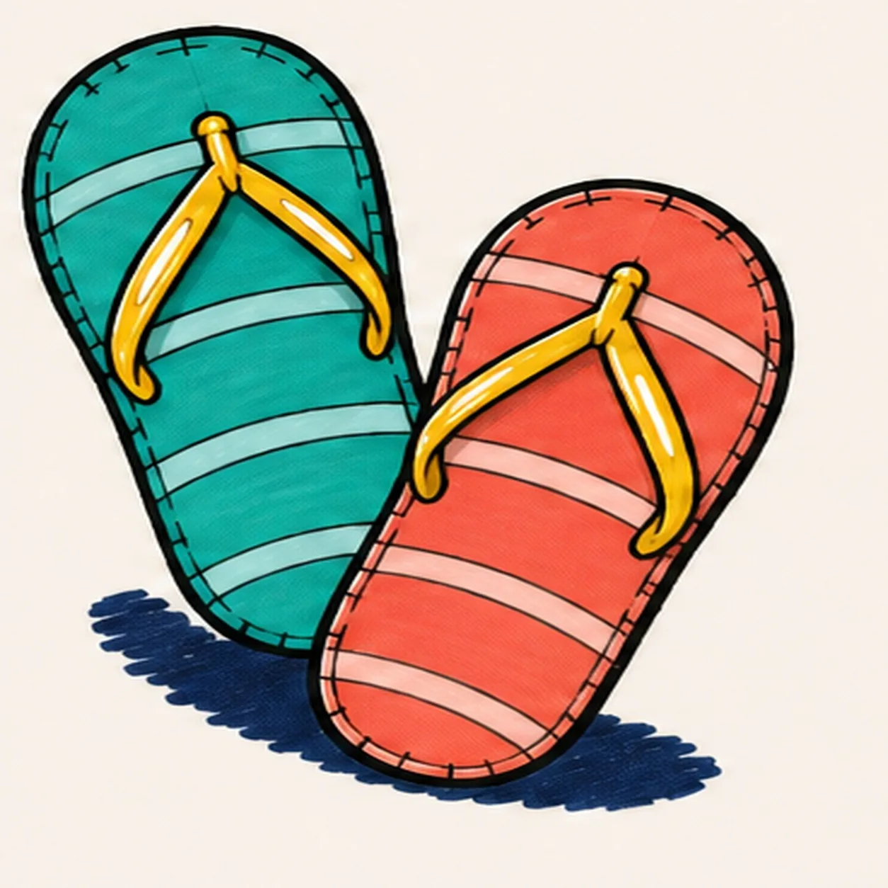
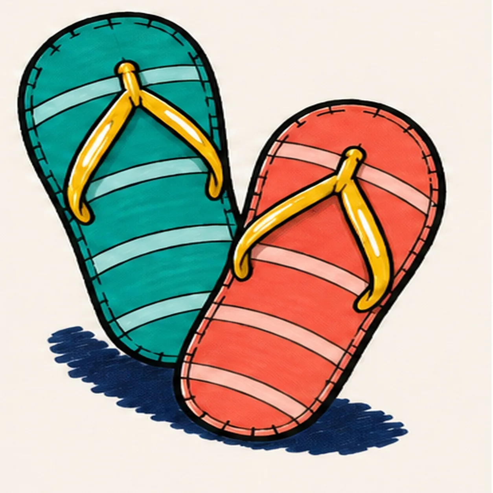

Felt-tip marker mode
Let's draw a pair of colorful flip-flops
Treat this as one playful practice round: sketch the idea loosely, simplify the shapes, then commit with confident marker outlines and bright fills.
-
01

Map the two sandals
Use pale pencil to place two long axes, separated toe and heel arcs, side-width ticks, two toe-post dots, six open strap routes, six band placements, and one broken shadow route.
Marker tip: Keep the soles open and sparse. Fix the overlap now: the front-right sandal should cover only a small lower-right piece of the rear-left sandal.
-
02

Shape both soles
Connect one rear-left sole and one front-right sole with rounded toes, narrow waists, heels, and the same small overlap.
Marker tip: Ghost each long edge before touching down. Stop the rear sole cleanly at the foreground sandal instead of drawing a line through the overlap.
-
03

Attach the Y straps
Wrap the routes with one Y-shaped strap on each sandal, keeping all six branches attached to their original toe posts and sole edges.
Marker tip: Draw the center branch from the toe post first, then split to the two side attachments. Trace each route with a finger and make sure no branch floats.
-
04

Curve six sole bands
Add exactly three curved bands across each sole and one simple edge seam around each sandal, stopping every band at a strap.
Marker tip: Let each band bow across the width of its own sole. Count three on teal and three on coral before moving on.
-
05

Reserve shine tread and shadow
Add exactly two strap-highlight reserves per sandal, small outer-edge tread notches, and the established broken ground shadow.
Marker tip: Keep all four highlights narrow and inside the yellow strap footprints. Break the tread rhythm around the overlap so the foreground sole stays clear.
-
06

Ink and map the beach colors
Ink only established contours and map coral, teal, golden yellow, pale aqua, and deep navy in every planned region.
Marker tip: Ink the toe posts and strap branches first, then rotate the page for the long sole curves. Pull color strokes along each sandal and leave small fill gaps for the final pass.
-
07

Pull the marker texture
Clarify the established directional marker streaks, strap overlaps, tread notches, highlights, and shadow without adding any form.
Marker tip: Use a second light pass only where the fill needs depth. Keep the visible streaks running with each sole instead of scrubbing them flat.
-
08

Finish the boardwalk pair
Complete only the established marker fills, strengthen selected keeper contours, and clarify the same bands, straps, highlights, tread, texture, and shadow.
Marker tip: Count two sandals, six strap branches, six sole bands, and four highlights, then stop. Feet, flowers, sand, and beach props would make a different lesson.
![Handmade felt-tip marker drawing of one face-free upright cartoon hourglass with exactly two rounded teal caps, exactly two attached coral side pillars, one pale-aqua pinched glass vessel, one curved upper golden-yellow sand bed, one centered falling sand stream, one rounded lower sand pile, exactly two open-paper glass highlights, exactly three yellow four-point sparkles, exactly four deep-navy cap notches, thick imperfect black outlines, visible directional marker texture, and one broken deep-navy ground shadow](../assets/cartoon-hourglass-with-flowing-sand-finished-v1.webp)
![Handmade felt-tip marker drawing of one face-free upright teal cartoon walkie-talkie leaning slightly right with one top-left antenna, exactly two coral top knobs, one attached coral push-to-talk button on the upper-left side, one blank pale-aqua rounded screen with a dark bezel, exactly five horizontal deep-navy speaker slots, exactly two yellow radio-wave arcs above the antenna, exactly two open-paper case highlights, exactly four lower grip ribs arranged two per side, thick imperfect black outlines, visible directional marker texture, and one broken deep-navy ground shadow](../assets/cartoon-walkie-talkie-finished-v1.webp)